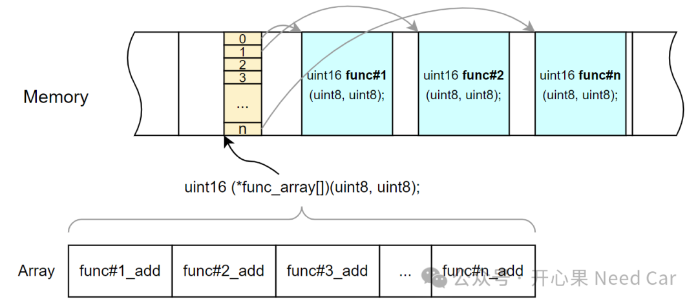

开心果 Need Car · 2024-04-24T06:22:00+08:00 · 微信原文
嵌入式开发中，为了更高效的完成任务，程序员会根据不同的场景选择不同的语言。尽管高级语言层出不穷，但是，在嵌入式领域，尤其车规级MCU开发，C语言地位依然无法被撼动。夯实基本功，是开发高质量代码的基础，尤其对我这种非科班出身的底软工程师，更需如此。本文，聊一聊C语言中的函数指针数组。
1、函数指针数组定义与初始化
函数指针数组：元素是函数指针的数组。
（一）函数指针定义与初始化
返回类型 (*函数指针数组名[])(参数列表) ={函数指针/函数名 #1,函数指针/函数名 #2,......函数指针/函数名 #n};
注释：
返回类型：函数指针数组中元素（即：函数）的返回类型；
参数列表：函数指针数组中元素（即：函数）的形参列表。
初始化函数指针数组的元素即可以用函数指针，也可以用函数名。函数名即是函数的入口地址。
函数指针数组、函数、函数入口地址之间的关系，示意如下：

2、函数指针数组的使用方式
使用方式如下：
函数指针数组名[下标](参数列表);OR(*函数指针数组名[下标])(参数列表);
写一个函数指针数组的示例，如下所示：
// 定义三个不同功能的函数void printHello() {printf("Hello\n");}void printWorld() {printf("World\n");}void printBye() {printf("Bye\n");}int main() {// 定义函数指针数组，数组元素类型为void (*)(void)void (*funcArray[])(void) = {printHello, printWorld, printBye};// 使用函数指针数组调用对应函数for (size_t i = 0; i < sizeof(funcArray) / sizeof(funcArray[0]); ++i) {funcArray[i](); // 调用第i个函数,或者写成 (*funcArray[i])()}return 0;}
运行结果：HelloWorldBye
3、函数指针数组的使用场景
要通过使用Switch语句可以获得类似的效果，改写后，如下所示：
// 定义三个不同功能的函数void print_hello() {printf("Hello\n");}void print_world() {printf("World\n");}void print_bye() {printf("Bye\n");}// 定义枚举类型，映射到对应的函数enum PrintActions {PRINT_HELLO,PRINT_WORLD,PRINT_BYE,NUM_PRINT_ACTIONS // 计算枚举值数量};int main() {// 使用 switch 语句根据枚举值调用对应函数for (enum PrintActions action = PRINT_HELLO; action < NUM_PRINT_ACTIONS; ++action) {switch (action) {case PRINT_HELLO:print_hello();break;case PRINT_WORLD:print_world();break;case PRINT_BYE:print_bye();break;}}return 0;}
相对于Switch写法，使用函数指针数组灵活性更高，因为数组元素可以在程序运行时改变。所以，写代码时，不妨用用函数指针数组。
往期精彩回顾